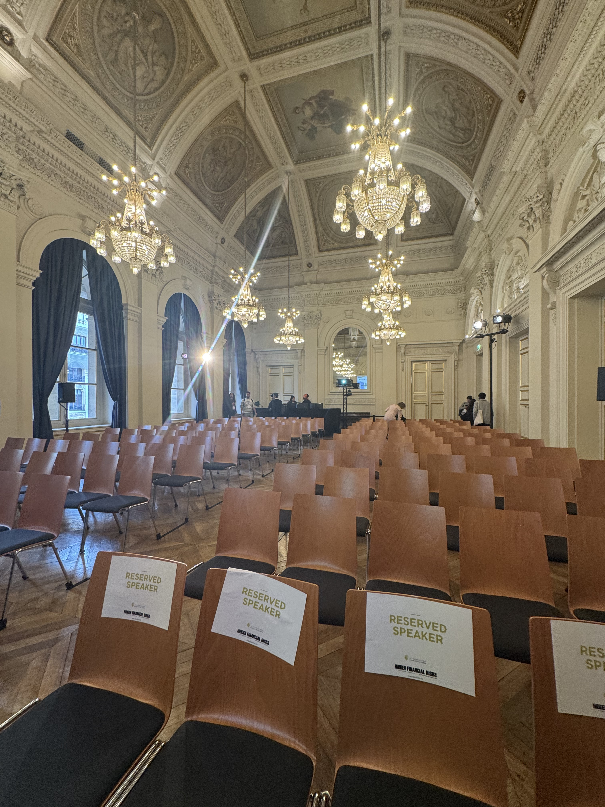
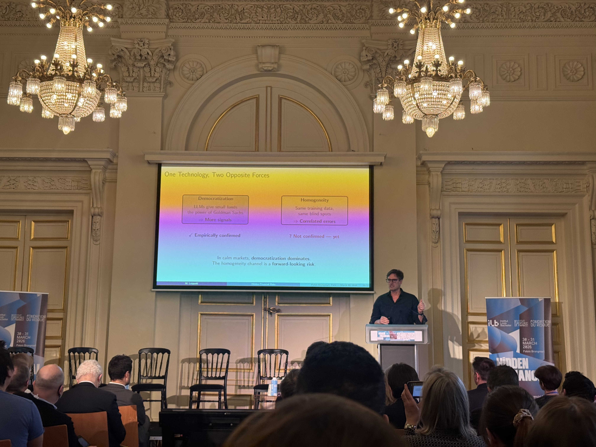

I recently attendend to the 19th Financial Risks International Forum which took place at the Palais Brongniart in Paris. This year’s edition notably focused on AI and the risks associated with it.

The forum opened with an address from the Chair of the AMF (Autorité des marchés financiers), who shaped the second day notably around AI: used properly, AI allows regulators and market participants to detect risks earlier and with far more precision than traditional tools could. She walked through how AI is now embedded across financial institutions, from asset managers automating parts of the investment process relying on models for real-time transaction monitoring. Retail investors were also part of the speech, with AI-driven research tools and chatbots becoming part of the everyday investing experience, which raises the question of how well individuals actually understand the tools guiding their decisions.
She was equally direct about the issues this shift creates. Governance, model transparency, data protection and systemic risk were enumerated as four areas regulators need to watch more closely as AI adoption accelerates. Because so many market participants may end up relying on similar models trained on similar data, decisions could become more correlated across the market, amplifying moves during periods of stress rather than absorbing them.
On the supervisory side, she described how AI is already changing the AMF's own toolbox. Machine learning is used to process and analyze far larger volumes of market data than before, helping detect market abuse, filter out false positives, and identify malicious websites and fraud schemes targeting retail investors (tasks that would be extremely time-consuming to carry out manually). She referenced a recent survey showing that around 90% of market participants already use AI, or plan to adopt it, a figure that illustrates how quickly the technology has moved from experimentation to becoming a standard part of the toolbox.
AI and the Integrity of knowledge
Several interconnected traps threatening the reliability of AI-driven knowledge were emphasized. The epistemic trap arises when models trained on AI-generated outputs degrade accuracy through feedback loops, while the homogenization trap flattens the diversity of thought as organizations converge on the same few large language models. The infrastructure trap compounds these risks: with cloud platforms dominated by three hyperscalers, AI accelerators controlled by NVIDIA, and semiconductor lithography monopolized by ASML, financial institutions face dangerous dependency on Big Tech. Meanwhile, the information trap makes verification prohibitively expensive (in a world where AI can generate plausible content at scale, the burden of fact-checking falls on human experts, and flawed AI-generated papers can slip through peer review undetected).

At the core of these concerns lies a single issue: using AI as a substitute for human judgment rather than as a tool to augment it. The speaker emphasized that LLMs may read faster, but speed does not equal understanding or accuracy. Data is just as important: firms are overwhelmed with information, but using bad or biased data in models gives false risk results. Ensuring the integrity of knowledge in an AI-driven world will require stronger governance, diversified infrastructure, and a renewed commitment to human expertise as the final arbiter of truth.
Round Table: Hidden Risks in AI and pricing models
This round table, I found particularly interesting, focused on several subjects, especially keeping humans in the loop for AI-driven risk management. The speakers agreed that only humans can truly interpret meaning and context (especially in high-stakes processes like systemic risk monitoring) where a single wrong call can have cascading effects. They also stressed that humans must validate the data fed into models, since the assumption that observations are independent and identically distributed (i.i.d.) is almost never true in real financial markets. The panel also warned against conflating volume with value. It is cheap to produce information but costly to verify it. AI can generate endless content, but that does not make it knowledge. As one speaker put it: information that proliferates is not knowledge. In risk management, distinguishing between the two is essential.